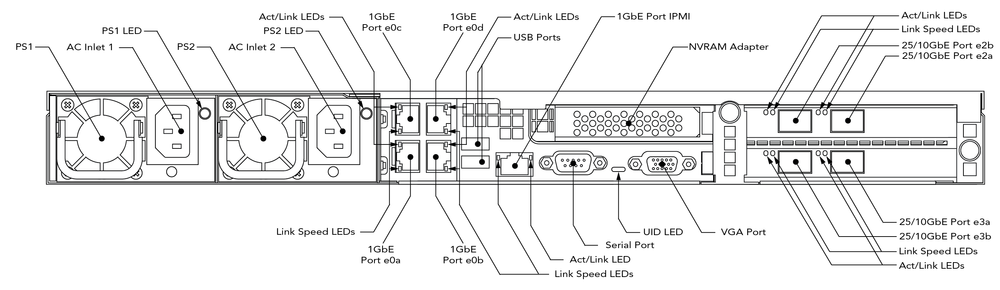

Appendix A: Setting a Static IP Address on an FXT Node¶
This appendix explains how to connect to an FXT node physically and set a temporary static IP address on one of the network ports.
You might need to set a static address if your network does not support using self-assigned IP addresses (in the 169.254.*.* range) and your node does not receive an IP address automatically from a DHCP server.
Each node needs one IP address before it can be used to create a cluster or be added to an Avere cluster. These IP addresses are only used temporarily; during normal operation, the cluster assigns IP addresses to each node.
Connecting to the Physical Node¶
There are a variety of ways to connect to the FXT node, including using the serial port, the USB and VGA ports, or the IPMI port. All of these ports are on the back of the chassis. You can use a serial cable or KVM switch, or directly connect a monitor and keyboard to the chassis.
The node’s bootloader echoes boot messages to the serial console and accepts interaction from a console command prompt.
Serial Port Configuration Settings¶
Use a null modem cable to connect to the serial port on the back of the FXT node’s chassis.
An FXT node serial port uses these configuration settings:
- Speed: 115200 baud
- Data bits: 8
- Stop bits: 1
- Parity: None
- Flow control: None
FXT 5000 Series Port Locations¶
This diagram shows the port names and locations for FXT 5000 Series hardware nodes. The 1GbE ports (e0a, e0b, e0c, and e0c) are typically used for initial configuration.
(The data ports - e2a, e2b, e3a, and e3b - are slightly different in different FXT 5000 Series models. The FXT 5850 has dual-mode 25GbE/10GbE data ports, but other models have 10GbE ports with the same names.)
Logging In and Setting the IP Address¶
After connecting to the node, you will use the maintenance menu to configure one of the network interfaces.
Log in to the node with the username maintenance and the default password tiered2010. The node displays the maintenance menu:
You have logged into the AvereOS maintenance menu. If you are configuring a
cluster for the first time, use menu item 1 to configure a network port, and
then access https://ip/fxt to complete the cluster configuration.
Node [name] running [AvereOS_version]
Maintenance Menu
1. Configure network parameters before cluster join
2. Modify cluster management network parameters
3. Configure a new cluster
4. Reboot node
5. Power down node
6. Disable NVRAM batteries
7. Install new software packages
8. Configure node IPMI networking
9. Reformat node
Enter menu item number or type "exit" to log out:
Type 1 and press Return.
Enter menu item number or type "exit" to log out: 1
This will configure the initial networking parameters.
After configuration, connect via https to the address
supplied to complete configuration
Port Address Netmask MTU Link
---------- --------------- --------------- ---- ----
e0a 169.254.6.37 255.255.224.0 1500 up
e0b 169.254.5.163 255.255.224.0 1500 up
e0c 169.254.5.146 255.255.224.0 1500 up
e0d 169.254.6.114 255.255.224.0 1500 up
Router:
DHCP: enabled
DNS Server:
Use link aggregates? [y]:
If your system uses link aggregates, make sure this configuration is correct. The system then asks you to configure by DHCP if a server is available, and if not, prompts you to specify the port to configure and the new settings.
Configure using DHCP? [y]: n
Port name [e0a]:
If you don’t want to configure the suggested port (the first port on the list), enter a different value.
MTU [1500]:
VLAN tag (use default for untagged) [none]:
IP address [169.254.6.37]:
Make any changes to the MTU or VLAN tag settings that your network requires.
When prompted with the existing IP address, type in the new address.
To prevent conflicts, assign an IP address that is on the same subnet and VLAN as the IPs in your cluster network, but outside the cluster network’s IP address range. Remember that this IP address is temporary, and it is used only until the cluster is created or until this node is added to the cluster. As part of the cluster, the FXT node’s ports are configured with IP addresses from within the cluster network range.
IP address [169.254.6.37]: 203.0.113.0
Netmask [255.255.224.0]:
Router []: 10.1.0.1
DNS server [None]:
Commit changes? [yn]:
Type y to complete the configuration change.
You only need to set one static IP address per node. After confirming the address change, you can end the console session to this node. (Type exit and press Return to end the sesion.)
If this is the first node in your cluster, follow the instructions in Connect to the First Node to connect to the static IP address that you just set and begin cluster creation.
If this node will join an existing cluster, follow the instructions in Adding Nodes to the Cluster to locate it and join it to the cluster.